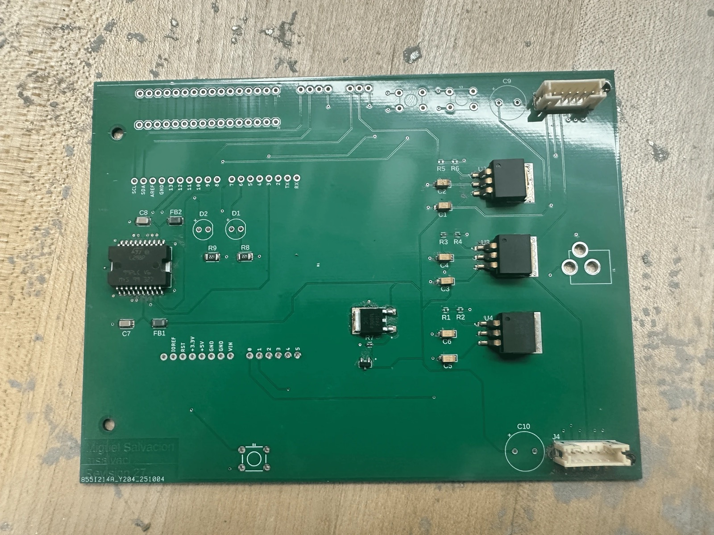

I created a real-time embedded vehicle from the bare metal up, combining custom hardware design, low-level firmware, a custom operating system, and closed-loop motor control. A preemptive RTOS guarantees strict execution deadlines for the PID loop, UART telemetry, and LCD updates.
The system is built around an STM32 Cortex-M4 microcontroller on a custom two-layer PCB that routes power and signals to L298 H-bridge motor drivers, LM1084 voltage regulators, quadrature encoders, servos, and an I2C LCD.
PCB Design
I designed the board in Autodesk Fusion to interface the STM32 Nucleo with the vehicle's peripherals. The PCB handles 5V and 3.3V power distribution, motor-control routing, encoder inputs, and user I/O.

Firmware
I wrote the system bootloader in ARMv7-M assembly to initialize the exception vector table, stack pointers, and the .data and .bss memory sections. From there, I built bare-metal C drivers using MMIO for PWM, ADC, I2C, and interrupt-driven UART.
To support preemptive multitasking, I designed a dual-stack context-switching architecture using the ARM Cortex-M exception model. SysTick tracks thread budgets and pends PendSV; the handler saves caller registers to the user stack (PSP), pushes remaining state to the kernel stack (MSP), stores the MSP pointer in the TCB, selects the highest-priority runnable thread, and restores the new context.
I also implemented a rate-monotonic scheduler with a UB schedulability test, an SVC path between user and kernel space, newlib support for printf and malloc, and mutexes with HLP/IPCP to avoid unbounded priority inversion.
Motor Control
The vehicle decodes wheel position through EXTI quadrature encoders and drives the motors through hardware-timer PWM. I tuned a closed-loop PID controller to maintain wheel speed with under 10% steady-state error, while UART telemetry and I2C LCD updates ran as concurrent real-time tasks without missing critical execution deadlines.